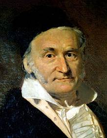

- Johann Carl Friedrich Gauss (Gauß) (30 abril 1777– 23 febrero 1855) era un matemático y físico aleman que contribuyó significativamente en varios campos como teoría de números, Álgebra, Estadística, Análisis, Geometría diferencial, Geodesia, Geofísica, Electroestática, Astronomía y Óptica.
- Algunos le denominan Princeps mathematicorum (del latín, “el príncipe de las Matemáticas") y como “el matemático más grande de la Historia“. Gauss tuvo mucha influencia en el desarrollo de muchos campos de las Matemáticas y la Ciencia en general y es reconocido como uno de los más influyentes matemáticos d la Historia.
